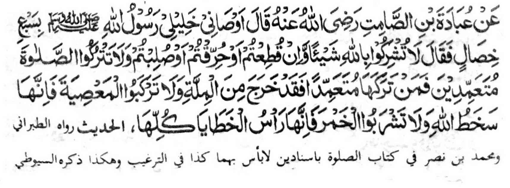

Miyaka thitayan ko Ubadah Bin Samit a pitharo iyan, “Inosiyatan ako o pekhababaya-an aken a bolayoka aken a Rasulollah (Sallallaho ‘Alaihi wa Sallam) sa pito a mapiya a galebek, pitharo iyan:
- ‘Oba niyo sakoton so Allah sa maito bo apiya pen zabo-olen kano odi na totongen kano a bibiyag odi na sola-an kano,
- go oba niyo bagaken so Sambayang thibaba ka sa tao a ibagak iyan thibaba na sabenar a miyakaliyo ko Agama,
- go oba niyo nggalebeka so dosa ka mata-an a maparoli niyo so rarangit o Allah
- go oba kano inom sa pakabereg ka mata-an a sekaniyan na olo o langon o manga rarata.’”
Si-i ko isa a Hadith, na so Abu Darda (Radhiallaho ‘Anho) na pitharo iyan, “Tiyapa-osanako o pekhababaya-an ko a Nabi (Sallallaho ‘Alaihi wa Sallam) a pitharo iyan: